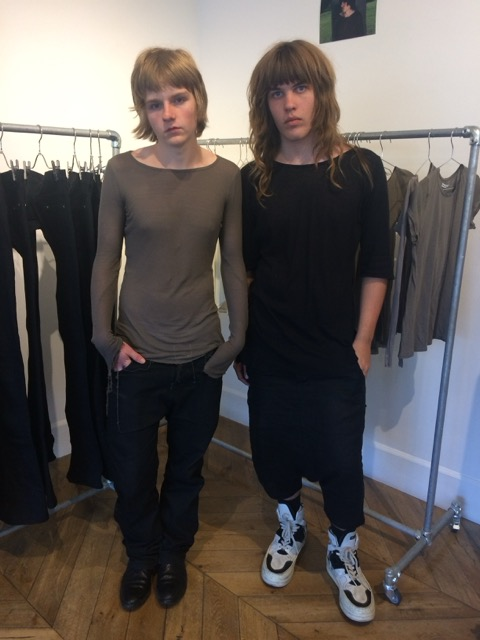
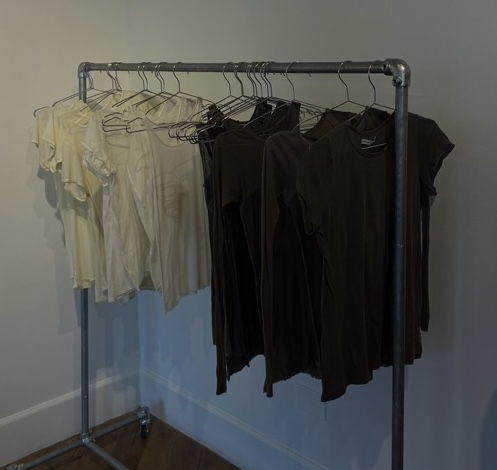
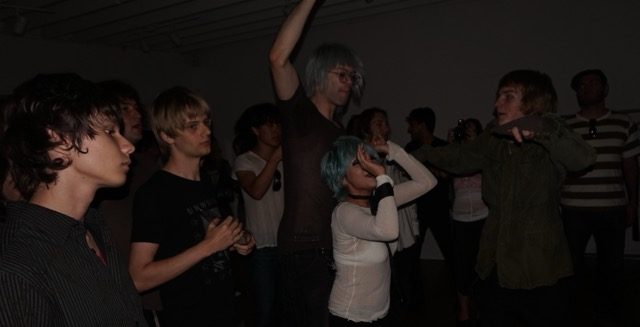

Cameron Jagger
CAMERON JAGGER consists of Travis Jagger and Cameron Mangus — a creative project started in Summer 2025 at ages 15 and 17. All garments are made entirely by hand, in-house. We spoke with them about commitment, process, manufacturing, moving early, and what they want people to feel when they wear the work.

CAMERON JAGGER is built around control: control of craft, control of manufacturing, and control of the idea. The project has remained self-contained by design—patterning, sewing, and production carried out by the founders alone.
Their answers read like a manifesto—equal parts urgency, discipline, and refusal. Below is the interview, presented with minimal edits.
At 15 and 17, most people aren’t thinking about building something like this — what made you commit to it early?
It felt most natural to commit when we did. It’s sort of cliché to say but it really was as if a veil was lifted. We both felt a very unsettling lack of fulfilment in our lives at a relatively young age, which sort of acted as the catalyst for our early commitment. It felt like a literal existential threat, an imperative need to wake up every day and do what we loved. We feel incredibly thankful to have made that a reality.

When you’re making a piece by hand, what part of the process do you care about the most?
Ultimately, it’s the idea. It’s impossible to assign one step in the process with the title of being most important. We care about them all very greatly. The steps of the process, from patterning to sewing, all serve the idea. It is about preserving and perfecting that idea as much as we can, and from that, hopefully making something beautiful.
You speak a lot about quality — what’s something you refuse to compromise on, even if it makes things harder?
Manufacturing. We decided very early on that as we grow, we will refuse to let go of our own manufacturing. The clothes will forever be made on our terms, by our people. We will not sell out. We refuse to give in to this corporatized, commercialized bullshit that comes from the industry in current times. We care about our clothes deeply. As of now, as we told you, every single piece is made by hand by our hands alone. We intend to keep manufacturing in our control indefinitely.

You’ve already put yourselves in rooms most people your age aren’t in — how did you even get there, and what did you take from it?
We will do just about anything to get into rooms we should by zero means be in. In those situations, we operate purely off of willpower. Trying random shit until something works (which it usually does). One lesson we’ve learned from being in those situations, which has been invaluable, is that your young age does not, in any circumstance, limit you from what you are capable of. We have been looked down upon, dismissed and taken far less seriously for our age, but fuck it we ball.
When people see CAMERON JAGGER a year from now, what do you want them to understand immediately?
I sincerely hope that when someone looks at Cameron Jagger, they understand the thought, love, time, and intentionality that goes into each and every piece of clothing. Cameron Jagger isn’t some shitty, meaningless money grab. We don’t have a trust fund. We go into ridiculous amounts of debt to make this shit happen because it needs to happen. In a less immediate sense I truly just hope people take as much from the clothing as we do. When we wear these pieces, it is a very intimate, personal experience. It’s beautiful. I hope others feel the same.
Note from CAMERON JAGGER: “Ended up getting em written tonight. Fantastic questions, had a lot of fun writing them. Thank you once again for all the support, means the world <3”